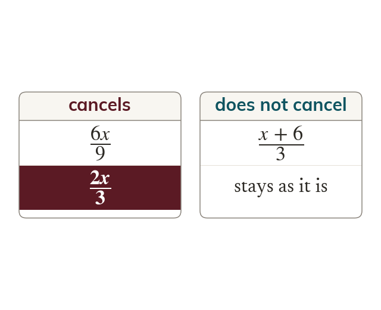

Only factors cancel
A fraction simplifies by dividing top and bottom by a common factor. It must multiply the whole top and the whole bottom.
A fraction simplifies by dividing numerator and denominator by a common factor. A letter or number can only be removed if it multiplies the whole of both the top and the bottom.